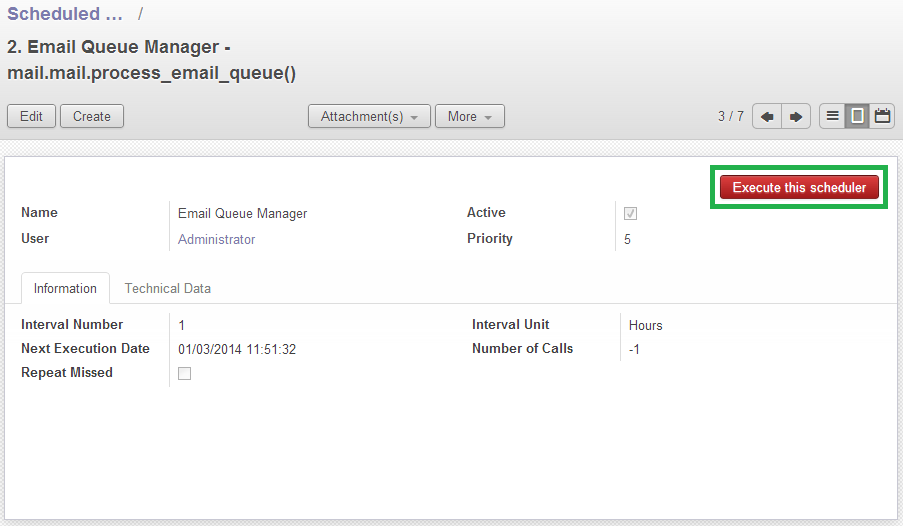

<section class="oe_container">
    <div class="oe_row oe_spaced">
        <div class="oe_span12">
            <h2 class="oe_slogan">Scheduled action executer</h2>
            <h3 class="oe_slogan">Launch a scheduled action at any moment</h3>
        </div>
        <div class="oe_span6">
            <div class="oe_row_img oe_centered">
                
            </div>
        </div>
        <div class="oe_span6">
            <p class="oe_mt32">
                This module allows any user with acces to the scheduler to execute any scheduled action at any moment.
            </p>
            <p class="oe_mt32">
                It adds a button on each view 'scheduled actions' to run it directly.
            </p>
        </div>
    </div>
</section>